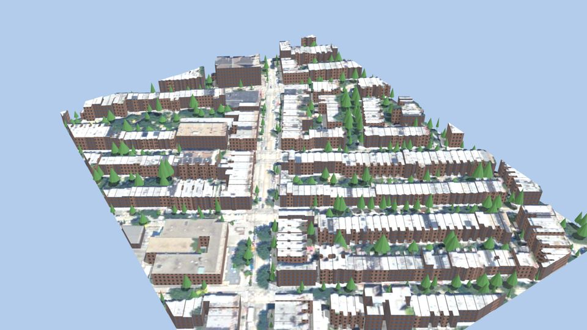
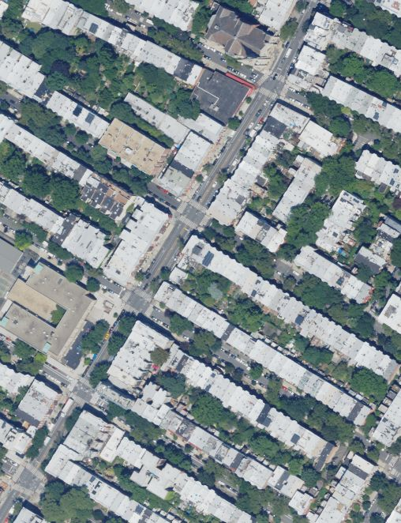
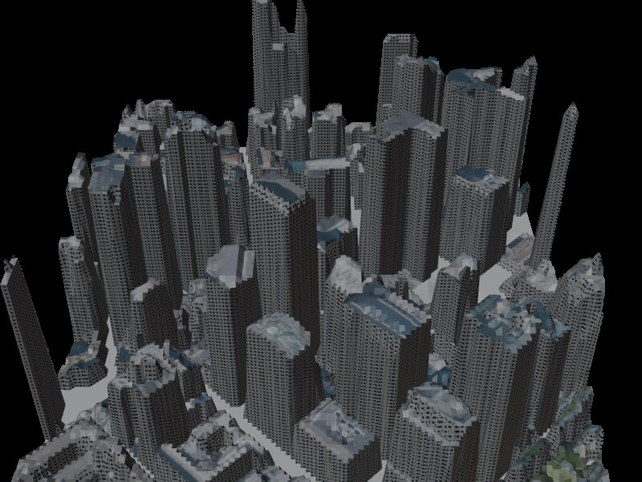
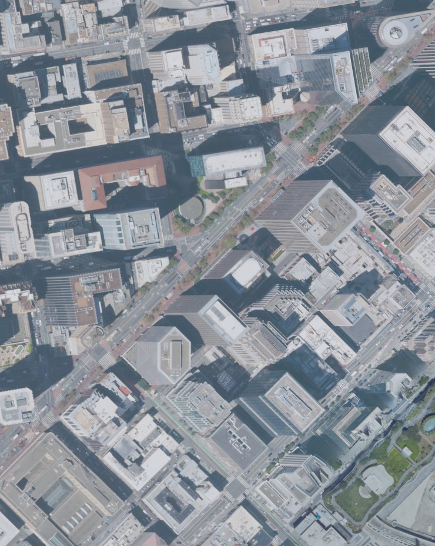
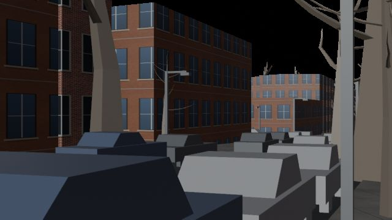
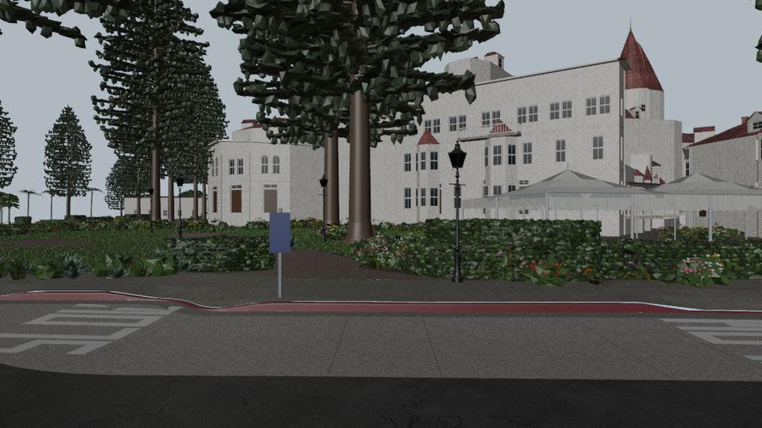
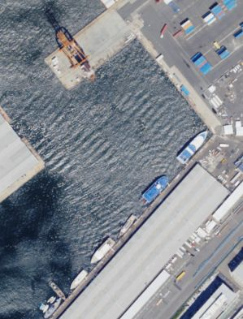
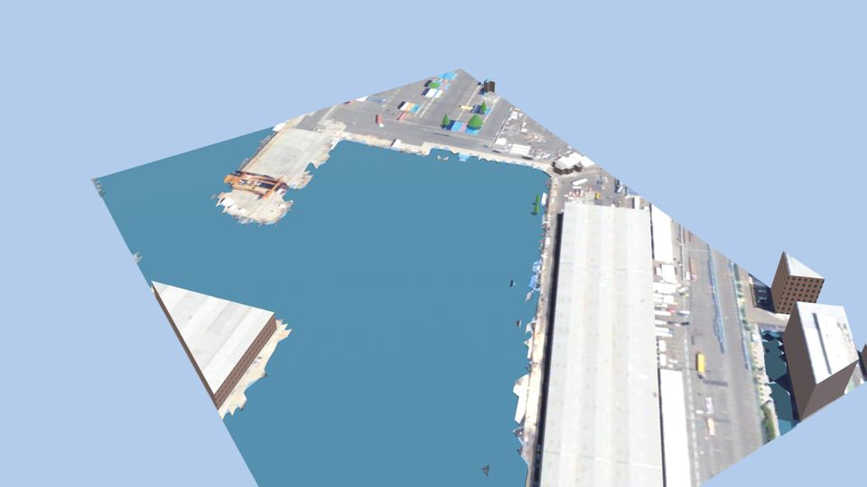

Real World Game Engine
Production-grade real places
An agent graph that turns public aerial imagery and LiDAR into a real US place you can open, walk and ship. One glTF file, built from sources you can name, scored against the street it came from.

Built · glTF
Source aerial- 13US places built from public data, one agent run each
- 15–32 minper place, start to finished file
- 0 errorsin the Khronos glTF validator, on the files you can download
- Public domainimagery and LiDAR, so the file is yours to cache and ship
01 · The agents
Agents build the place, one stage at a time
Name a US place. Each node is an agent with one job and one public source, and every edge passes on where its data came from. Click a node to see what it did in the 24 Oct Financial District run.
02 · Inspect it
Places that survive production, and comparison with the real thing
Open the file the way your technical artist will: textured, as clay, as wireframe, as normals. Then do the two checks only a real place allows. Swipe it against the aerial it was built from, and read the judge’s scores, misses included.

Unretouched files, exactly as the agents shipped them. Places like this come off a graph: open the pipelines that build them.See the pipelines ↓
03 · Pipelines
Pipelines for the places games are set in
A downtown block, a residential street, a landmark, a waterfront. Same graph, different weak points. Each one below is a real run, shown as it shipped.
A downtown block you can walk
Place→Footprints→LiDAR heights→Ground→Build→Texture→Walk test→Street judge→glTF

Best downtown run: Times Square, 24 Oct
Where it misses: Times Square has none of its signage or LED billboards, only uniform glass towers. The street judge matched at most 1 of 4 buildings to held-out street photos in any of the four runs of 24 October.
A residential street at eye level
Place→Footprints→LiDAR heights→Ground→Build + street kit→Texture→Walk test→Street judge→glTF

Where it misses: brownstones come out as generic brick blocks and the parked cars are grey boxes. The judge is uncalibrated, and we state its numbers as it gives them.
A landmark that has to read at a glance
Place (by hand)→Footprints (by hand)→LiDAR heights→Ground→Build→Texture→Walk test→Street judge→glTF

Where it misses: a person ran the first two stages, so this is not a full agent run. The turret and wings read; the palms came out as conifers.
A working waterfront
Place→Footprints→LiDAR heights→Ground + water→Build→Texture→Walk test→Street judge→glTF


The miss, shown on purpose: ships, containers and cranes have no footprint, so they stay pixels in the ground photo. Ports need a node this graph doesn’t have yet.
04 · Places
Thirteen places, one run each
No hand-picking. Every place we’ve run, with its walk-test score: routes completed out of 20 in our own walk-through test.
Runs took 15 to 32 minutes and $3.62 to $10.53 of model compute. Without clipping LiDAR heights to building footprints, none of 20 routes complete. Seattle’s LiDAR was missing from our usual catalogue; the agents found the USGS dataset themselves. Sources for every place: NAIP aerial imagery and USGS 3DEP LiDAR (public domain), Overture Maps footprints (ODbL).
05 · Provenance
Every place carries its sources into the engine
A real place has two questions a generated asset never faces: can you keep it, and is it right? Every run answers both in its record: which sources, under which licence, and how it scored against photos it never saw.
06 · Into your engine
Runs inside your tools
One self-contained GLB: terrain, buildings and textures in metres, with the origin at the corner of the place. No plugin, no streaming, no account.
- UnrealImport the GLB through Interchange.
- UnityImport it with the glTFast package.
- GodotOpens natively as a scene.
- BlenderFile › Import › glTF 2.0. It’s what the agents export from.
Place in, file out
A place becomes one request
A run starts from one place and returns one file and its record. Today we start runs for you; this is what you send and what comes back.
# what you send { "place": "Market St & Montgomery St, San Francisco", "extent": "440 x 552 m" } # what comes back world.glb 5.8 MB · glTF 2.0 · 0 validator errors record.json sources · licences · walk test · judge shots/ source aerial · overview · street frame
07 · Access
Start with a file, then your place
No seats and no sign-up to look. You pay for places, not logins.
Open
Free
- Two San Francisco places as GLB, both run 8 Oct
- Walk test for each: Pacific Heights 20 / 20, Financial District 15 / 20
- Yours to cache and ship; keep the ODbL credit
Your placeStart here
Per place
- A US place you name
- GLB, run record and source shots
- Walk-tested and judged, misses stated
Program
Talk to us
- A district, a city, or a route
- Game, simulation or previz
- Pipeline nodes for what your places need
Model compute per place so far: $3.62 to $10.53. How we compare with OSM plugins, Google 3D Tiles, Bmap, Cityweft and nine others, and the evidence behind each job: the research page.
Put a real place into production
Tell us your place
Which place, what it’s for, and how you build places today. We’ll reply by email.